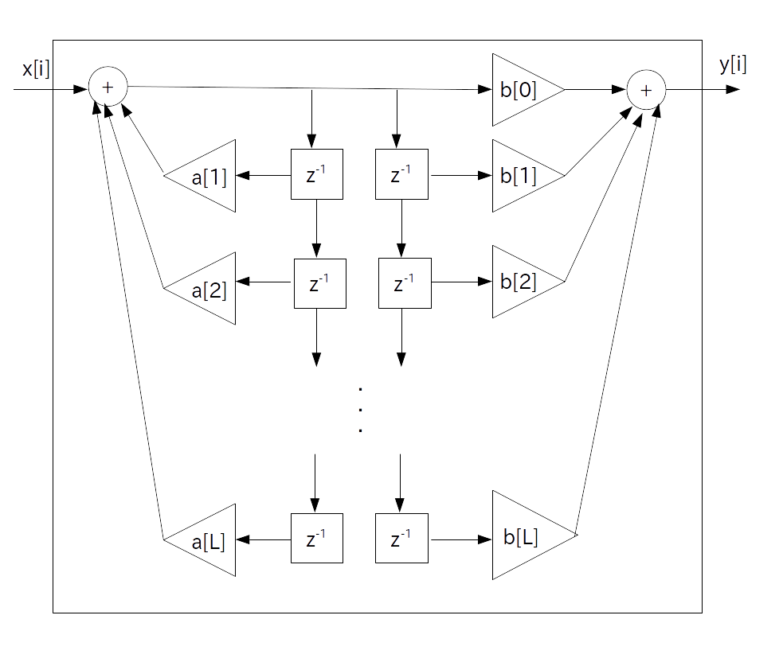
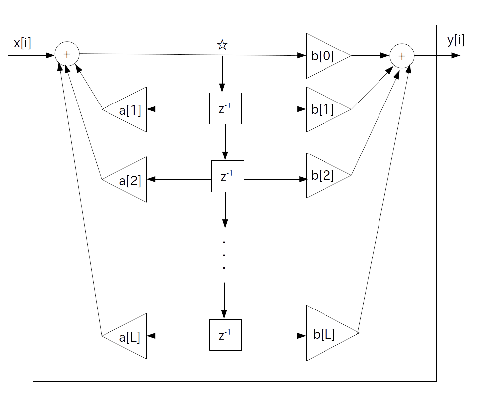

次に IIR (Infinite Impulse Response) フィルタですが、このフィルタは日本語では「無限インパルス応答フィルタ」と呼ばれています。
つまり、インパルス応答が無限に出続けるフィルタです。
従ってこのインパルス応答を Z 変換して伝達関数を求めても、伝達関数はZ変換の定義そのものになるため、FIR フィルタのように簡単にプログラミングすることは出来ません(無限のforループになります)。
そこで IIR フィルタの場合はフィードバック機構を使って設計をします。
IIR フィルタには色々な種類があるのですが、今回は話を簡単にするために、次に示す標準形 L 次 IIR フィルタだけを考えます。
正整数 $\textrm{L}$ を有限の数、$a[i]$ 、$b[i]$を実定数とした時、標準形 IIR フィルタの伝達関数は以下で表される。
\begin{align*} \textrm{H}(z) & = \frac{ \sum_{i=0}^{\textrm{L}} \{ b[i] \cdot z^{-i} \}}{ 1 - \sum_{i=1}^{\textrm{L}} \{ a[i] \cdot z^{-i} \} } \\ & = \frac{ b[0] + b[1] \cdot z^{-1} + b[2] \cdot z^{-2} + \cdots + b[\textrm{L}] \cdot z^{-\textrm{L}} } { 1 - \{ a[1] \cdot z^{-1} + a[2] \cdot z^{-2} + \cdots + a[\textrm{L}] \cdot z^{-\textrm{L}} \} } \end{align*}
なお実定数 $a[i]$ 、$b[i]$ をIIRフィルタ係数と呼ぶ。
また整数 $\textrm{L}$ を「フィルタ次数」と言う。
この伝達関数はフィードバック機構 \begin{align*} \frac{ 1}{ 1 - \sum_{i=1}^{\textrm{L}} \{ a[i] \cdot z^{-i} \} } \\ \end{align*}
と FIR フィルタ
\begin{align*} \sum_{i=0}^{\textrm{L}} \{ b[i] \cdot z^{-i} \} \end{align*}の直列結合になっています。
前段のフィードバック機構は 9 ページの例6と例7より以下のブロック図で表されます。
従って FIR フィルタと直列結合した時のブロック図は次のようになります。

ただこのままでは遅延器が重複してもったいないので１つにまとめ、最終的に標準形 L 次 IIR フィルタのブロック図は以下のように表されます。

プログラム表現は以下の通りです。
z[k] を k 時刻前の☆の値とする。
// 前段フィードバック部 z[0] = x[i]; for( int k = 1; k <= L; ++k ) z[0] += a[k] * z[k]; // 後段フィードフォワード部 y[i] = 0; for( int k = 0; k <= L; ++k ) y[i] += b[k] * z[k]; // バッファシフト for( int k = 1; k <= L; ++k ) z[k] = z[k-1];